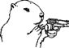

\1\2ğaç\3
Dağ sıçanları adam öldürür mü?

Evet, insanları öksürerek öldürürler.
Dağ sıçanları, sincap familyasının yumuşak huylu ve koca göbekli üyeleridir. Yaklaşık olarak bir kedi ebadındadırlar ve tehlike sezdiklerinde yüksek sesle ciyaklarlar. Daha nahoş bir biçimde, Moğol steplerinde görülen bobak türü, Yersinia pestis bakterisinin neden olduğu bir akciğer enfeksiyonuna (yaygın olarak bilinen adıyla hıyarcıklı veba) karşı özellikle hassastır.
Dağ sıçanları bu hastalığı öksürerek etrafındakilere yayarlar; pirelere, sıçanlara ve en nihayetinde de insanlara bulaştırırlar. Doğu Asya’dan Avrupa’ya sıçrayan bütün büyük vebalar Moğolistan’daki dağ sıçanlarından gelir. Dağ sıçanlarından kaynaklanan tahmini ölü sayısı bir milyarın üzerindedir; bu da dağ sıçanlarını sıtma taşıyan sivrisineklerin ardından en çok insan öldüren ikinci hayvan yapar.
Dağ sıçanları ve insanlar vebaya yakalandıklarında, koltukaltlarındaki ve kasıklardaki lenf bezleri siyahlaşır ve şişer (bu yaralara “hıyarcık” adı verilir; bu kelime Yunancada “kasık”, daha sonra da “hıyarcık” anlamına gelen boubon kelimesinden gelmektedir). Moğollar bir dağ sıçanının koltukaltlarını asla yemez, çünkü “dağ sıçanının koltukaltları ölü bir avcının ruhunu içerir”.
Dağ sıçanının diğer kısımları Moğolistan’da lezzetli birer yiyecektir. Avcılar avlarını takip ederkenki ritüelleri karmaşıklaştırdılar: Bu ritüellerin arasında takma tavşan kulakları takmak, dans etmek ve bir Tibet öküzünün (yak) kuyruğunu sallamak yer alır. Yakalanan dağ sıçanları sıcak taşlar üzerinde bütün olarak ızgara yapılır. Avrupa’da Alpler’deki dağ sıçanlarının yağına romatizma ilacı olarak büyük değer verilir.
Diğer dağ sıçanı türleri arasında çayır faresi ve marmota yer alır. Marmota Günü 2 Şubat’ta kutlanır. Her yıl Punxsutawney Phil adlı bir dağ sıçanı, Pennsylvania’daki Gobbler’s Knob’ta bulunan ve elektrikle ısıtılan yuvasından smokinli “bakıcıları” tarafından alınıp, kendisine gölgesini görüp göremediği sorulur. Eğer “evet” derse kış altı hafta daha uzayacak demektir. Phil 1887’den bu yana hiç yanılmadı.
Hıyarcıklı veba hâlâ görülüyor (ciddi olarak en son 1994’te Hindistan’da görüldü) ve bu hastalık ABD’de karantina gerektiren üç hastalıktan biridir (diğer ikisi sarı humma ve koleradır).